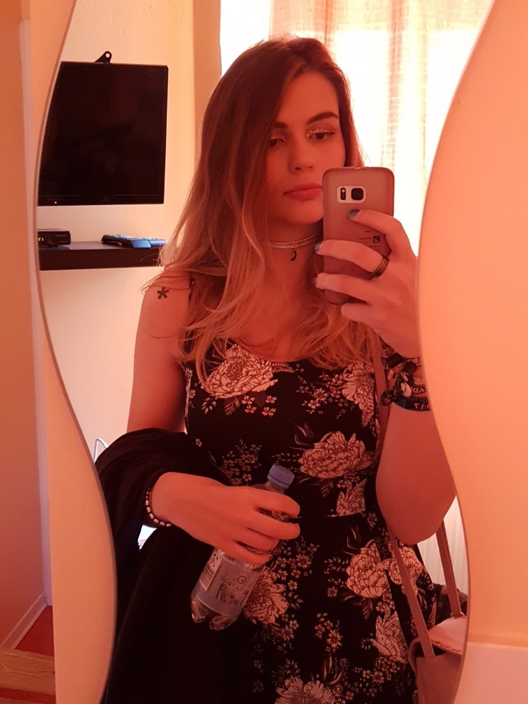

< back
info
- jenni, jen, yoyo...
- 20.07.1996
- german
- asexual spectrum
- she/her
important!
might softblock / unfollow if i see you hate on bands / artists / characters a lot. disliking is fine, saying something is bad and nobody should like it because you don't annoys me.
it would mean a lot if you could keep sexual content to a minimum around me or put a little warning ahead of tweets with it. thank you!!
in return, if you need anything tagged, please let me know! if you want to stay anon, message me on >tumblr.
accounts
> twitter.com/jenyoyomain twitter, music etc.
> twitter.com/yoyohanemanga/anime/gacha game twitter
> twitter.com/jenniyoghurtart twitter (threads!)
> mastodon.art/@jenyoyo
mastodon, art focus, varying levels of activeness
> instagram.com/jenyoyo
art
> instagram.com/vecxrdiaprivate / personal
> jenyoyo.tumblr.com
personal - inactive but has occasional posts
> 488.tumblr.comold art tumblr, inactive but has some lovely pieces
> youtube
might add more speed drawings / paintings
trivia
- i love travelling to gigs (there's no gigs where i live so i kind of have to)
- i love swimming, used to do it regularly and v much want to get it back into my weekly routine
- i play guitar to get away with sitting in my room and singing when i'm alone
- i've studied computer science with a focus on good design, as in, make it pretty and usable. bad design makes me angry and i will rant about bad updates